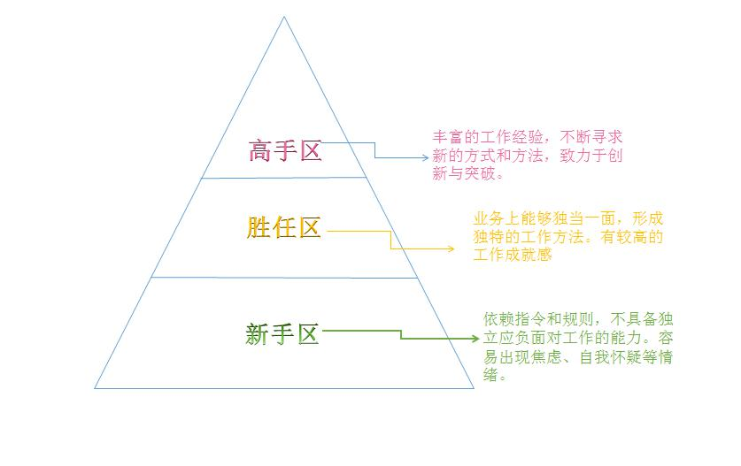

作者：燕妮
案例：我是一名刚毕业一年的程序猿，我想咨询的是，其实我对这个行业并不是特别喜欢，每天做的事情也不是我喜欢的事，心情变得特别郁闷，我已经26了，也快要30了，都说男生30而立，我很想找到自己真正愿意去做的事，然后在30之前有所成就，可是到现在，我都发现不了自己的兴趣和爱好，每天都是过一天算一天的活着，真的很着急，眼看身边的人越来越有出息，看到自己还在那里徘徊不前。 每次和我爱人讨论未来，我都会不耐烦，毕竟我根本不知道未来怎么样，我接下来怎么做，我很害怕，也很迷茫。
年轻人刚走出校门，进入职场都会有一个不适应的过程。
在学校中，衡量好与劣的标准，通常是学习成绩，这类标准明确，能够量化的指标。
比如某个人的成绩第一名，班上有 一个推荐研究生的指标就给了他；如有两个指标，第二名就有了希望。因为，大家想努力的话有方向，没有得到结果也不会有什么怨言。
到了职场上，年轻人一下子发现过去的规则都不适用了，甚至没有什么明确的新规则，也不知道该怎么努力。
年轻人认为，我付出就会有回报，但是当得不到回报的时候，就会愤愤不平，觉得公司不公平。觉得工作好无趣，觉得自己不适合这份工作。产生疑惑，迷茫，徘徊不前。
01 以上这个案例，我们发现了什么问题?
毕业一年的程序员，发现对互联网编程这个行业不是特别喜欢，做着自己不感兴趣的工作，也不知道自己喜欢什么，对生活觉得迷茫、焦虑。
我猜测这位26岁毕业的程序员，要不就是中途有去学习过别的课程；要不就是研究生学历。
那么我们来分析下，如果是花费了时间和精力去学习过的课程，当初肯定是分析过自己的兴趣，看好这个行业的情景。工作一年后，才发现不喜欢自己所做的事，不胜任这份工作。所花费的时间成本和机会成本不说。退一步讲，就算你再花费一段时间去找到自己喜欢的工作，你难道就能够保证，下一份工作就是你真正感兴趣，并且能一直做下去的吗？
如果是研究生毕业。可能对自我的期待会比较高，入职的起点也比较高，而应聘的只是一位普通的程序员，干的活和别的本科生没有差别，编写一样的程序代码，一样的开发模块。或许心里会稍显委屈。
这种委屈来自于对自我的期待较高，而得到的比较少，会有很强烈的心理落差，也成了不喜欢这份工作的原因之一。
在有限的信息量里面，我们看到的是没有兴趣，没有产生工作的动力，组织的回馈比较少，个人的工作满意度比较低。
02 每份工作都有相应的工作职责和岗位内容，之所以不同的人会呈现出不同的状态，和本身处于什么阶段有关。
如果我们把一个人在工作中的进阶过程大致分为三个阶段，分别是新手区、胜任期和高手期。
在不同的阶段，每个人对于工作的感受是完全不同的。

（1）新手区阶段
很多人迫切地想要先实现目标，他们不知道该如何有效地提升自己的工作能力，更不清楚如何适应规则，摸索出一套行之有效的工作方法。导致大量低水平重复，感受不到任何成就感，觉得工作无趣，甚至怀疑自己选错了专业，选错了职业，发现不适合干这个，但是又找不到自己真正想做的工作。
新手区一般会处于刚毕业1-3年的职场小白中。典型的表现就如上述案例中所表述的：
对工作无所适从，没有可依赖的指令，没有明确的“作业或者论文要求”。一切都必须在公司大的组织框架下，发挥工作的自我能动性。当组织的指令不明确，或者自我的需求不明确时，就会出现焦虑，迷茫，自我怀疑的情绪中。
这个时候要采取的职场策略：找到一个阶段性目标点，找到一条适合自己，而又高效的“捷径”，快速的掌握岗位的要求，以及自身需要达到的KPI指标。坚定不移的走下去。当你熬过了这一段迷茫、困惑的时光之后，你会豁然找到属于自己的一片天地。
（2）胜任期阶段
渐渐摸索出了行之有效的工作方法，并总结出了一些工作经验与规律，渐渐的能够承担一部分的管理工作，帮助更多的人成长。在这个阶段，组织满意度和个人满意度相对较高。
能否快速到达胜任期，和个人工作的领悟能力以及组织的契合度高度相关。
一般正常的来讲，如果中间不转岗，这个时期会是2-4年的时期。
比如一个应届毕业生，刚进入公司就锁定了自我的职场目标以及进阶的路径。而刚好遇到一个时机，需要提升为储备中层或者资深的程序员。那么这个提拔的前提肯定是：以及能够完全胜任提升的职位的岗位要求，达到了相应的能力素质。
（3）高手阶段
位于金字塔端的毕竟是少数，具备领导特质的也必须是少数。这个时期需要已经积累了丰富的经验，面对不同的工作情境，能够调用整合各种资源，解决80%以上的问题。
而这个时候，工作对你的意义已经不仅仅是一份收入，更是一份自我价值的体现。你会迸发出前所未有的热情，思考更好的方式和方法，并力求创新与自我突破。
03案例解析
“程序猿”的案例很具有代表性。因为在职场中，很多人光知道干活，却从来不去琢磨工作的底层规律和方法。永远处在低水平的重复，消耗了工作热情和动力。结果越做越无趣，越做越没有成就感。上班时昏昏欲睡，一度进入“伪工作”的状态。
这些是工作本身的问题吗？
工作从来都是无趣的，你混过的所有日子，终究将以另一种形式回报给你：比如升不了职，涨不了薪；你以为换一份工作能改变这种状况，但事实是，你永远会陷入这样无助的周而复始之中。
这里我想讲一个案例：曾经面试过的一个工作3年的程序员：半年跳槽一次，从3K的应届生，硬是换了5次工作，薪资涨到15K,每一次跳槽都以涨薪为跳板。这样做是否正确，我不做评价。但是我看到离职的理由是：因为公司方向调整，从程序员调岗到业务推广，底薪下降到6K.这个很像超级玛丽的小游戏，每一次跳级都能吃到金币，但是弹跳不成功，即 “game over”.
想要工作变得有趣，想从工作中获得成就感，想在工作中做出成绩，想成为不可替代的那一个，其实很简单。改变你自己，从傻傻地干活变成自发的会干活，再从会干活到超越干活，你所做的所有的高效，提升自己能力的工作，最终将会创造价值，回馈给你。
随着每一次的进阶和进步，随之而来的是成就感逐渐增加，工作这件事情才会渐渐显露出它有趣及值得挑战的一面。
有趣是一种内驱力的直觉冲动，更是一种能力的持久状态。
有趣的事情不一定重要，但我们必须要学会一件事情，那就是把重要的事情变得有趣，这才是关键。
孩童时代，我们会觉得玩耍比较有趣，比较抗拒学习。但是等我们掌握到了学习的方法，并且能取得不错的成绩，在学习这件事情上获得了满满的成就感，这才发现原来学习也是能够找到乐趣的。
工作不也是如此吗？
很多时候，我们之所以感觉工作无趣，是因为看不懂它的高级。
有趣的表现形式是：将复杂的事情简单化；将繁琐的事情流程化；在一次次摸索中，提升自己的能力，突破自我的认知和跃迁。
但愿你能尽快的突破职场的徘徊区，谨记：你所经历的所有迷茫困惑，都是在走一条弯路；而你要做的，尽快规划一条省时省力的“捷径”，彻底摆脱你的徘徊期。